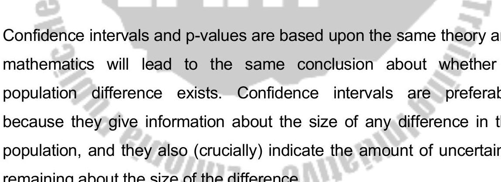

CHAPTER NINE
Correlation and Regression
9.1 Learning Objectives
At the end of this chapter, the student is expected to be able to:
- Understand the concepts of correlation and regression
- Construct and interpret scatter plots
- Calculate and interpret Pearson's correlation coefficient (r)
- Perform hypothesis tests for the correlation coefficient
- Understand the assumptions of linear regression
- Determine the equation of the least-squares regression line
- Interpret the slope and intercept of the regression line
- Calculate and interpret the coefficient of determination ($r^2$)
- Perform hypothesis tests for the slope of the regression line
- Understand the difference between correlation and causation
9.2 Introduction
In previous chapters, we focused on analyzing single variables (univariate analysis) or comparing groups based on a single variable.
Correlation and regression analysis (bivariate analysis) are used to study the relationship between two quantitative variables measured on the same subjects.
- Correlation Analysis: Measures the strength and direction of the linear association between two variables. It does not imply causation.
- Regression Analysis: Describes the nature of the relationship between two variables (how one variable changes as the other changes) and allows for prediction. One variable is considered the independent (predictor) variable (X), and the other is the dependent (response) variable (Y).
Example relationships:
- Height and weight
- Age and blood pressure
- Dosage of a drug and reduction in symptoms
- Years of education and income
9.3 Correlation analysis
Correlation analysis aims to quantify the linear relationship between two quantitative variables, say X and Y.
Scatter Plot (Scatter Diagram)
A scatter plot is a graphical representation of the relationship between two quantitative variables.
Each pair of observations $(x_i, y_i)$ is plotted as a point on a graph with the X variable on the horizontal axis and the Y variable on the vertical axis.
The pattern of points on the scatter plot reveals:
- Form: Linear or non-linear relationship.
- Direction: Positive (as X increases, Y tends to increase) or negative (as X increases, Y tends to decrease).
- Strength: How closely the points follow a pattern (e.g., tightly clustered around a line indicates strong relationship; widely scattered indicates weak relationship).
- Outliers: Points that deviate markedly from the general pattern.
Examples of Scatter Plots:
Figure 9.1: Strong Positive Linear Correlation

Figure 9.2: Moderate Negative Linear Correlation

Figure 9.3: No Linear Correlation
Figure 9.4: Non-linear (Curvilinear) Correlation

Pearson's Correlation Coefficient (r)
Pearson's product-moment correlation coefficient, denoted by $r$ (for a sample) or $\rho$ (rho, for a population), measures the strength and direction of the *linear* relationship between two quantitative variables.
Properties of r:
- Ranges from -1 to +1: $-1 \le r \le +1$.
- $r = +1$: Perfect positive linear correlation.
- $r = -1$: Perfect negative linear correlation.
- $r = 0$: No linear correlation (but there could still be a non-linear relationship).
- The closer $|r|$ is to 1, the stronger the linear relationship.
- The sign of $r$ indicates the direction (positive or negative).
- It is unitless.
- Correlation between X and Y is the same as correlation between Y and X.
- Sensitive to outliers.
Calculation Formula for Sample Correlation Coefficient (r):
Definitional formula (based on Z-scores):
Computational formula (easier for calculation):
Where:
- $S_{xx} = \sum (x_i - \bar{x})^2 = \sum x_i^2 - \frac{(\sum x_i)^2}{n}$
- $S_{yy} = \sum (y_i - \bar{y})^2 = \sum y_i^2 - \frac{(\sum y_i)^2}{n}$
- $S_{xy} = \sum (x_i - \bar{x})(y_i - \bar{y}) = \sum x_i y_i - \frac{(\sum x_i)(\sum y_i)}{n}$
Example: Calculate the correlation coefficient for the height (X) and weight (Y) data from Table 2.9 (n=10).
First, calculate necessary sums:
$\sum x_i = 1716$
$\sum y_i = 663$
$\sum x_i^2 = 165^2 + ... + 185^2 = 295152$
$\sum y_i^2 = 60^2 + ... + 80^2 = 44611$
$\sum x_i y_i = (165)(60) + ... + (185)(80) = 114014$
Now calculate $S_{xx}, S_{yy}, S_{xy}$:
Finally, calculate r:
Interpretation: There is a moderate positive linear correlation between height and weight in this sample.
Hypothesis Test for Correlation Coefficient ($\rho$)
Tests if the observed sample correlation ($r$) is significantly different from zero (or some other hypothesized value), suggesting a linear association in the population.
Hypotheses (testing for any linear correlation):
$H_0: \rho = 0$ (No linear correlation in the population)
$H_1: \rho \ne 0$ (Linear correlation exists in the population)
Test Statistic (t-test):
Degrees of Freedom: $df = n-2$.
Decision Rule: Compare $t_{calc}$ to the critical value $t_{\alpha/2, df}$ from the t-distribution table, or use the p-value approach.
Example: Test if the correlation $r=0.378$ calculated from the height/weight data (n=10) is significantly different from zero at $\alpha=0.05$.
$H_0: \rho = 0$
$H_1: \rho \ne 0$
$df = n-2 = 10-2 = 8$.
Critical value $t_{\alpha/2, df} = t_{0.025, 8}$ from t-table is 2.306.
Decision: Since $|t_{calc}| = 1.155 < 2.306$, do not reject $H_0$.
Conclusion: There is not sufficient evidence at $\alpha=0.05$ to conclude that there is a significant linear correlation between height and weight in the population from which this sample was drawn.